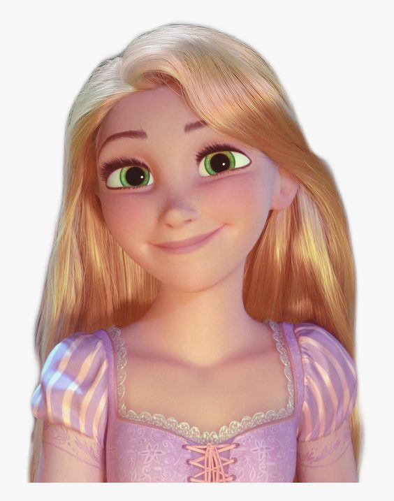

- Nama : Rapunzel Graciella
- Minat dan Bakat : Memiliki minat dalam bidang seni, salah satunya adalah menggambar. Memiliki bakat dalam menggambar dan bermain basket
- Hobi : Bermain basket, membaca, dan mendengarkan musik
- Idola/Role Model : Maudy Ayunda, karena Maudy Ayunda adalah seorang penyanyi dan pemain film, kehebatannya sebagai seorang aktris dan masih diimbangi dengan pendidikan menjadi bukti bahwa Maudy Ayunda peduli dengan dunia pendidikan. Maudy Ayunda yang merupakan lulusan universitas ternama di dunia, menginspirasi saya agar selalu bisa bersemangat dalam menempuh pendidikan di dunia perkuliahan sekarang.
- Motivasi : Jangan pernah untuk mengatakan tidak mungkin, tapi katakan bagaimana caranya, karena terkadang ketika kita diuji, hal tersebut bukan untuk menunjukkan kelemahan kita, tetapi untuk menemukan seberapa besar kekuatan kita untuk melewatinya.